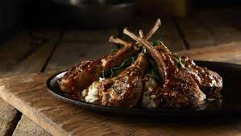

Lamb Chops (LongHorn version)

Description
I first discovered the amazing taste of Lamb Chops through LongHorn Steakhouse. They were running a special
and I decided to order that instead of the steak. The Lamb Chop is seasoned perfectly and the sauce is the cherry on top!
I match this with Brussel Sprouts and would order a Long Island Ice Tea. When I'm making this at home I usually have
water. Anything pairs well with these delicious Lamb Chops!
Ingredients
- Australian Lamb Chops
- Canola Oil
- Minced Red Onion
- Chopped Garlic
- Paesley
- Salt
- Ground Black Pepper
- Wilted spinach and mashed potatoes
Steps
- Marinade your lamb first. Prepare at least one hour to marinade the meat with a mix of canola oil, onion, parsley
and garlic. Make sure to flip occasionally to ensure all parts are marinated.
- Prepare your grill. You can use sauté pan if grilling indoors or char grill if grilling outdoor. For char grill,
make sure to have it very hot (around 475-500oF). Hot grill like this will ensure the meat to lock in the juices.
If grilling indoors, coat your pan with canola oil. Don’t forget to season the meat with pepper and salt.
- Now, start grilling! Place the lamb chops on the grill, making it to be 2-3 minutes for each side.
- Once the meat’s internal temperature reaches 140-145 degrees, you can take the meat from the grill. You can cook
longer if you desire to have it well done.
- Serve your lamb on a plate, completed with mashed potatoes and the spinach.
Sauce Ingredients
- 2 oz. of rough-chopped fresh mint, including stems
- 1 tsp finely-chopped mint leaves
- 6 oz. of prepared brown gravy (you can find this at grocery store in its dry sauce form)
- 1/2 cup of white sugar
- 1 cup of cider vinegar
How to make sauce
- Combine roughly chopped mint, cider vinegar, and white sugar into a sauce pan.
- Simmer the aforementioned ingredients until it makes syrup-like substance.
- Add the syrup to the brown gravy after straining the mint. Then, mix well.
- Add finely-chopped mint leaves, and stir the sauce well.